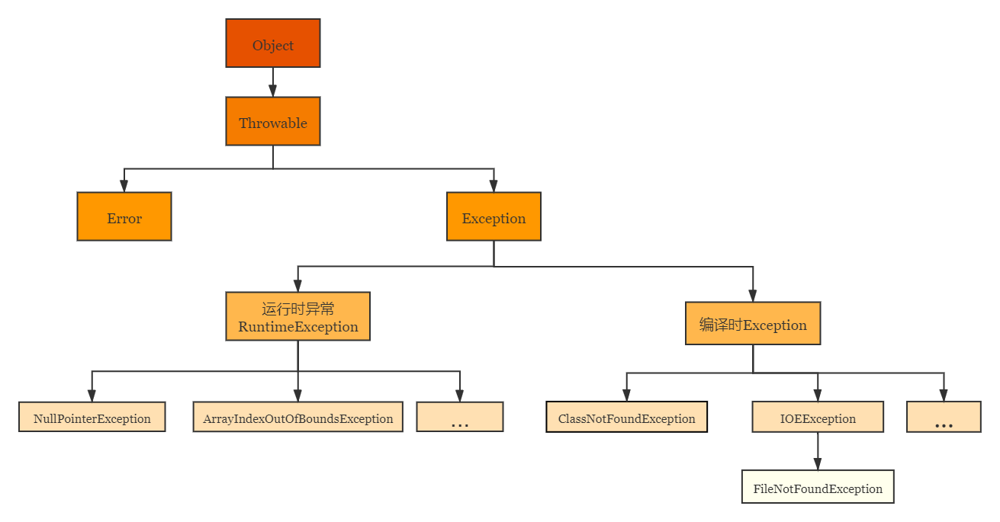

（十二）JAVA 异常处理
1. 异常概述与异常体系结构
1.1 异常概述
- 异常：在Java语言中，将程序执行中发生的不正常情况称为“异常”（开发过程中的语法错误和逻辑错误不是异常）
Java程序在执行过程中所发生的异常事件可 分为两类：
- Error: Java虛拟机无法解决的严重问题。如: JVM系统内部错误、资源耗尽等严重情况。比如: StackOverflowError和OOM。 一般不编写针对性的代码进行处理。
- Exception：其它因编程错误或偶然的外在因素导致的一般性问题，可以使用针对性的代码进行处理。例如:
- 空指针访问
- 试图读取不存在的文件
- 网络连接中断
- 数组角标越界
对于这些错误，一般有两种解决方法：
- 一种是遇到错误就终止程序的运行。
- 另种方法是由程序员在编写程序时，就考虑到错误的检测、错误消息的提示，以及错误的处理。
- 捕获错误最理想的是在编译期间，但有的错误只有在运行时才会发生。
比如:除数为0，数组下标越界等 - 分类：编译时异常和运行时异常
1.2 异常体系结构

Java.lang.Throwable
|---Java.lang.Error: 一般不编写针对性的代码进行处理。
|---Java.lang.Exception: 可进行异常处理
|---其他异常（编译时异常，checked）
|---IOEException
|---FileNotFoundException
|---ClassNotFoundException
|---Java.lang.RuntimeException（运行时异常，unchecked）
|---NullPointerException
|---ArrayIndexOutOfBoundException
|---ClassCastException
|---NumberFormatException
|---InputMismatchException
|---ArithmaticException
2. 常见异常
常见运行时异常
NullPointerException@Test public void test1() { String str = null; System.out.println(str.charAt(0)); }ArrayIndexOutOfBoundsException@Test public void test2() { Integer[] arr = new Integer[3]; System.out.println(arr[3]); }ClassCastException@Test public void test3() { Object obj = new Date(); String str = (String) obj; }NumberFormatException@Test public void test4() { String str = "12345a"; System.out.println(Integer.parseInt(str)); }InputMismatchExceptionpublic static void main(String[] args) { Scanner in = new Scanner(System.in); int x = in.nextInt(); System.out.println(x); }
6.ArithmaticException
@Test
public void test6() {
System.out.println(1 / 0);
}
3. 异常处理机制一：try-catch-finally
3.1 try-catch
格式：
try {
//可能出现异常的代码
} catch(异常类型1 变量名1) {
//处理异常的方式1
}catch(异常类型2 变量名2) {
//处理异常的方式2
}catch(异常类型3 变量名3) {
//处理异常的方式3
} finally {
//一定会执行的代码
}
举例
@Test
public void test1() {
String str = "12345a";
try {
System.out.println(Integer.parseInt(str));
} catch (NumberFormatException e) {
System.out.println(e.getMessage());
} finally {
System.out.println("一定会执行的语句");
}
}
注意：
finally可选；- 使用
try包装可能出现异常的代码，一旦出现异常，就会生成一个对应异常类的对象。根据此对象的类型，去catch中进行匹配； - 一旦
try中的异常对象匹配到某一个catch对象时，就进入catch中进行异常处理。一旦处理完成，就退出当前的try-catch结构（无finally的情况）。继续执行后续代码； catch中的异常类型如果没有子父类关系，则谁声明在上，在下无所谓；
若满足子父类关系，则子类一定要声明在父类的上面。（若子类在下面且可以匹配，则父类在之前就已经匹配了）；- 常用异常处理方式：
String getMessage()，e.printStackTrace()； try结构内声明的变量，在外面不能调用；catch处理编译时异常后，运行时还可能报异常；try-catch-finally结构可以嵌套。
3.2 try-catch-finally
finally可选；- 即使在
catch语句中出现了异常，或者出现了return语句，finally中的代码还是会执行； - 像数据库、输入输出流、网络编程Socket，JVM是不能自动回收的，我们需要自己手动进行资源的释放，需要声明在
finally中； - 开发中，由于运行时异常比较常见，所以我们 通常就不针对运行时异常编写try-catch-finally 了。针对于编译时异常，我们说一定要考虑异常的处理。
4. 异常处理机制二：throws + 异常类型
4.1 throws
throws + 异常类型卸载方法得声明处，指明此方法执行时，可能会抛出的异常类型；- 一旦方法体执行，出现异常，仍会在异常代码处生成一个异常类的对象，此对象满足
throws后异常类型时，就会被抛出；异常处后的代码，不再执行！ try-catch-finally：真正的将异常给处理掉了。throws的方式只是 将异常抛给了方法的调用者。并没有真正将异常处理掉。
4.2 重写抛出异常的方法
重写规则：子类重写的方法抛出的异常类型不大于父类被重写的方法抛出的异常类型。
public class SuperClass {
public void method() throws IOException {
}
}
class Subclass extends SuperClass {
@Override
public void method() throws FileNotFoundException {
}
}
4.3 如何选择异常处理的方式
开发中如何选择使用try-catch-finally还是使用throws?
- 如果父类中被重写的方法没有throws方式处理异常，则子类重写的方法也不能使用throws，意味着如果子类重写的方法中有异常，必须使用
try-catch-finally方式处理。 - 执行的方法a中，先后又调用了另外的几个方法，这几个方法是递进关系执行的。我们建议这几个方法使用
throw的方式进行处理。而执行的方法a可以考虑使用try-catch-finally方式进行处理。
5. 手动抛出异常：throw
关于异常对象的产生：
- 系统自动生成异常对象
- 手动生成一个异常对象，并抛出。
手动抛出异常：
if (id > 0) {
throw new Exception("数据非法！");
}
6. 用户自定义异常类
如何自定义异常类？
- 继承于现有的异常结构:
RuntimeException、Exception - 提供全局常量:
serialVersionUID - 提供重载的构造器
public class MyException extends Exception {
static final long serialVersionUID = -3387516993124229948L;
public MyException() {}
public MyException(String msg) {
super(msg);
}
}